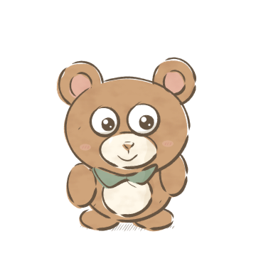
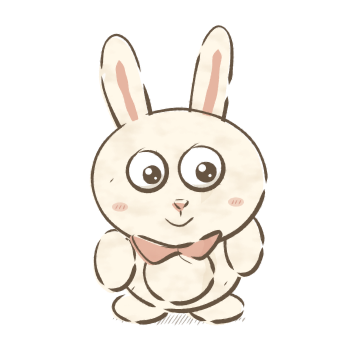
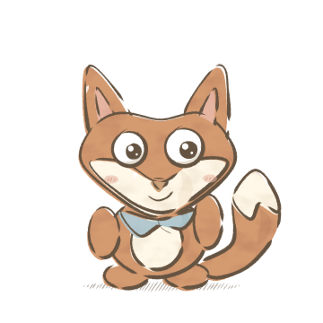
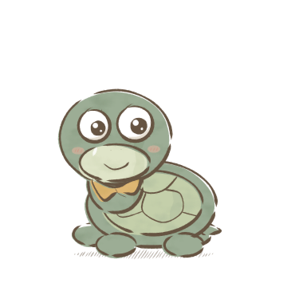

01 / 小熊

墨墨 Momo
好奇的发现者
圆耳朵 · 蜂蜜棕毛色 · 鼠尾草绿领巾
喜欢问为什么，遇到新事物会先凑近看看。有时太投入，会忘记带齐东西。
“我们一起去看看吧！”
#cfa47b#9cad95动作与故事分工
身体微微前倾，抬起一只小爪。
发起探索，提出问题；也会向朋友求助。
有的先问问题，有的认真倾听，有的想试一试，有的愿意等一等。每位朋友都有自己的节奏，也都会需要别人的帮助。

好奇的发现者
圆耳朵 · 蜂蜜棕毛色 · 鼠尾草绿领巾
喜欢问为什么，遇到新事物会先凑近看看。有时太投入，会忘记带齐东西。
“我们一起去看看吧！”
#cfa47b#9cad95身体微微前倾，抬起一只小爪。
发起探索，提出问题；也会向朋友求助。

体贴的倾听者
一高一低的长耳朵 · 奶油毛色 · 桃色领巾
留意朋友的感受，愿意分享。遇到陌生事物也会犹豫，需要朋友鼓励。
“你想和我一起吗？”
#fff8e9#e6b5a1长耳轻轻偏向说话的人，双爪靠近胸前。
表达感受、邀请分享；也可以先选择自己的需要。

活泼的尝试者
三角耳 · 奶油脸颊与大尾尖 · 雾蓝领巾
点子多，喜欢动手试。有时行动太快，愿意停下来重新想一想。
“我有个新点子！”
#d49a70#b3c9cf一只前爪抬起，大尾巴向一侧扬起。
提出玩法、带来新尝试；尝试失败后示范再来一次。

耐心的观察者
低矮圆龟壳 · 分块壳纹 · 麦黄领巾
喜欢观察、整理和按自己的节奏尝试。也会着急，也有需要朋友帮助的时候。
“慢慢来，我陪你。”
#9cad95#dfb774四脚稳稳着地，抬头看向朋友。
发现遗漏、整理物品、陪伴等待；不承担评分或催促职责。